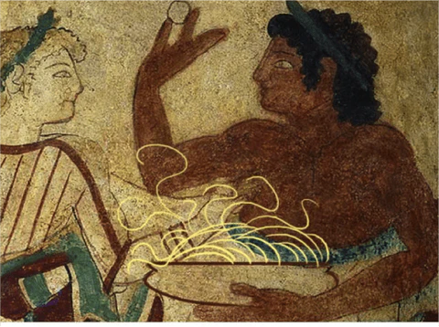

From Ancient Grains to Global Plates: The Story of Pasta
Pasta has become a beloved staple on dinner tables around the world, but its story is as rich and varied as the sauces that top it. With roots stretching back thousands of years, pasta’s journey spans continents, cultures, and centuries—woven into the heart of food history.
Ancient Origins: More Than Just Italy?
Many people assume pasta was born in Italy, but its origins are still debated by historians. Some theories trace it back to ancient China, where early forms of noodles made from millet appeared over 4,000 years ago. This leads to the popular tale that Marco Polo brought noodles to Italy from China in the 13th century. But the truth is a bit more nuanced. Arab traders likely introduced early pasta-like dishes to Sicily as far back as the 9th century. These dishes featured dried doughs made from semolina wheat, designed to last on long journeys—an early nod to what we now call dried pasta.
The Italian Renaissance of Pasta
While pasta may have had international beginnings, Italy made it iconic. By the 13th and 14th centuries, pasta had become common across the Italian peninsula. In Naples, durum wheat was widely used to create pasta that could be dried and stored—ideal for a growing population. The first known written record of pasta in Italy appears in the 13th century, and by the 15th century, pasta had become a distinct and treasured part of Italian cuisine. Pasta was often handmade at home, rolled and cut with care, or purchased from small shops called “pastifici.” Tomatoes, native to the Americas, didn’t arrive in Europe until the 16th century—and weren’t embraced in Italian cooking until the 18th century. Once they were, tomato-based sauces changed pasta forever.
Industrialization & the Birth of Mass Pasta
The 19th century brought machinery that revolutionized pasta production. Factories could now roll, cut, and dry pasta on a large scale, making it widely available and affordable. Pasta became a food not just of the elite but of everyday families across Italy—and soon, the world. During this time, Italian immigrants brought pasta to countries like the United States, Argentina, and Brazil. Spaghetti and meatballs, for example, became a uniquely Italian-American creation.
Pasta Today: A Global Icon
Today, pasta is made and eaten all over the globe. From artisan tagliatelle in Bologna to instant ramen in Tokyo, pasta has transformed into a global language of comfort food. Over 13 million tons of pasta are produced each year, with Italy still leading as the world’s top consumer per capita. Modern pasta comes in every form imaginable—gluten-free, whole wheat, stuffed, spiralized—and continues to evolve with culinary trends. Yet at its core, it remains humble, hearty, and deeply human.
A Legacy That Endures
Pasta’s long journey from ancient grains to your kitchen plate is a story of culture, creativity, and connection. It’s more than just food—it’s tradition, innovation, and joy served with every forkful.